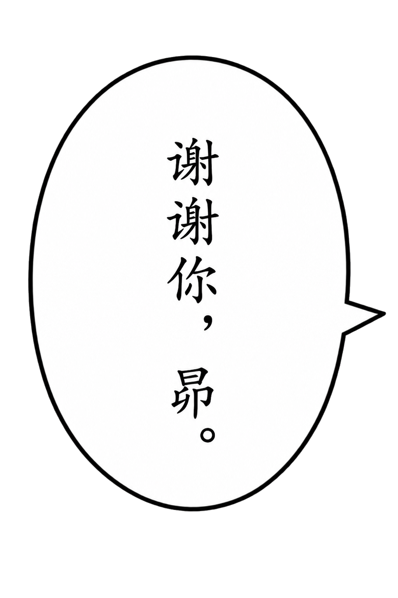
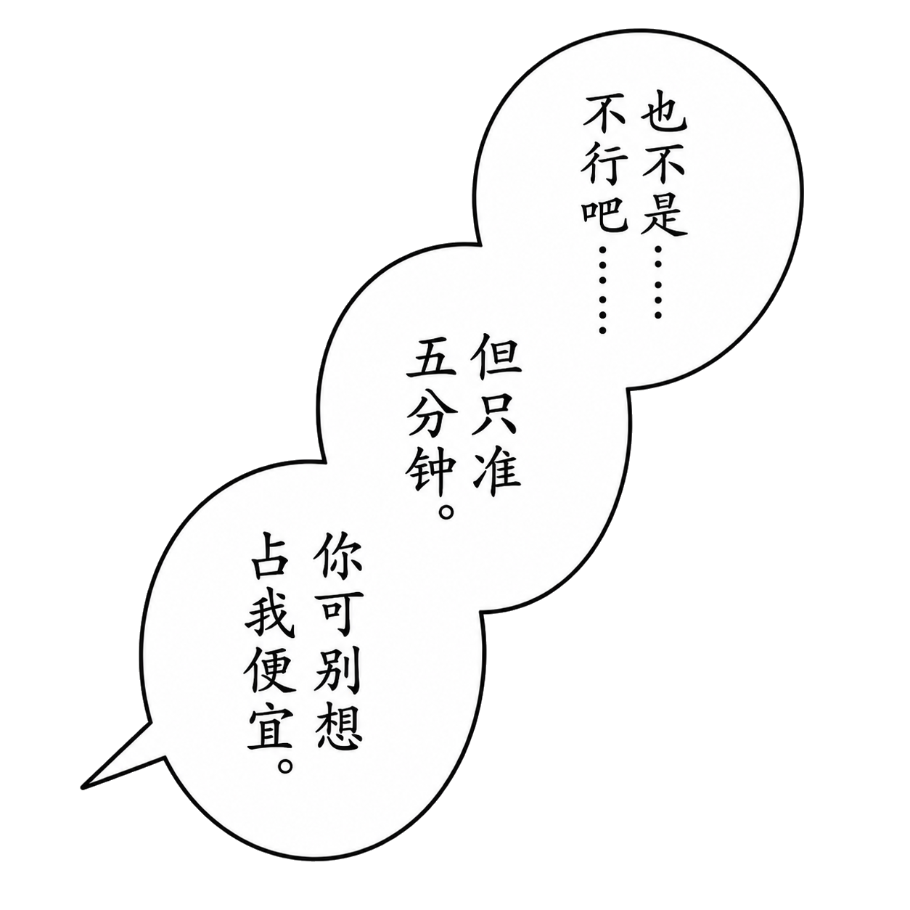
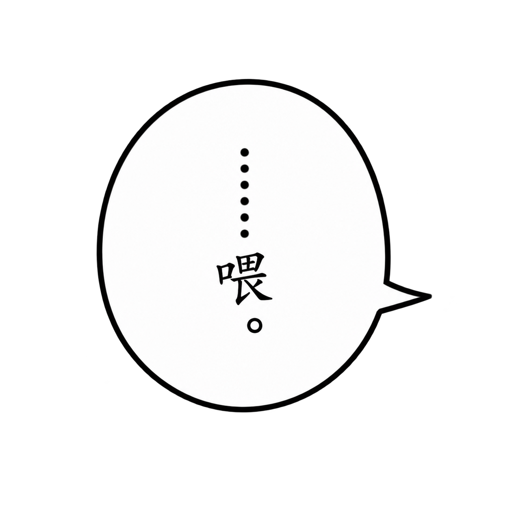
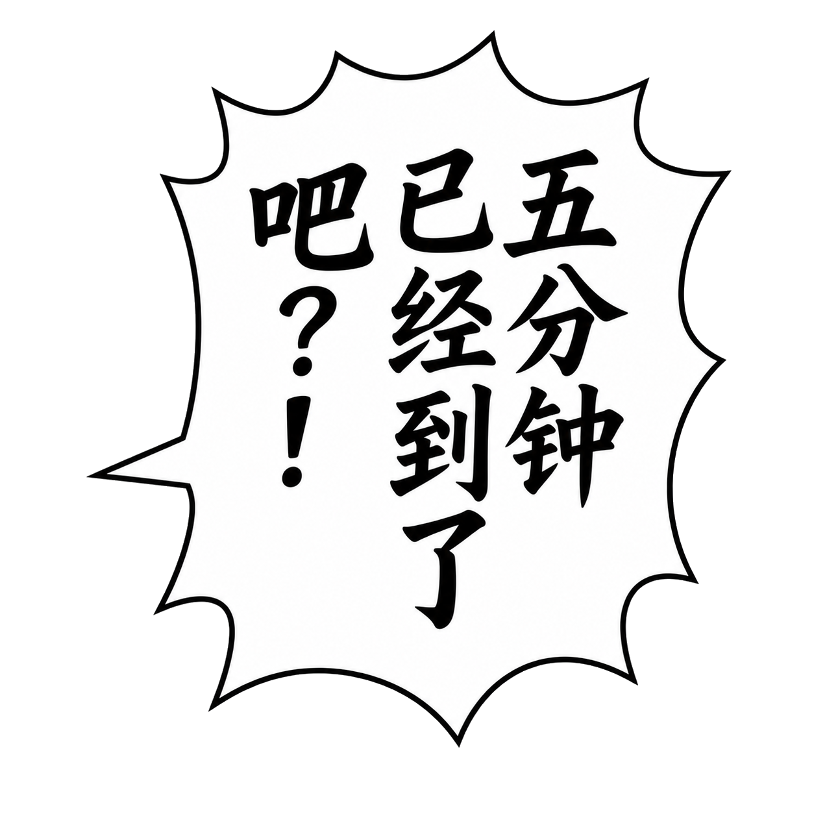

带字气泡：提示词与样式对照
每个可独立移动的对象，一次完成文字、轮廓和尾巴。分镜画面保持独立，文字修改只需要替换相应对象。旁白框、心理活动、无框文字也使用同一对象层。
以下用 P10 的真实素材说明提示词怎样表达样式。英文片段来自当时模型调用或保存的生成记录；中文解释和末尾模板是本次整理。历史完整提示词见附录。这些约束用于表达目标，出图后仍要检查字形、标点和透明度。
1 先写清对象边界
一张对象可以包含一句话，也可以包含有意一起移动的连接气泡。先确认哪些部分需要独立调整，再开始生成。
P10 的 C01 三段对白始终一起移动，所以生成一个三联对象。U02 的心理活动分布在人物两侧，需要分别取景，最终拆成 C03A 和 C03B 两个对象。相同说话人并不要求所有气泡合在同一张图中。
每个任务至少写明：
| 提示词部分 | 要写清什么 | 影响什么 |
|---|---|---|
| 参考职责 | 气泡裁片负责形状，已通过对象负责字体风格 | 保持轮廓与前页字风连续 |
| 对象与轮廓 | 单枚、连接瓣数、圆润或不规则尖刺 | 气泡形态和阅读节奏 |
| 精确文字 | 逐字文本、标点、每瓣或每列分配 | 内容与排版 |
| 尾巴 | 尖尾或圆珠、方向、实际说话人 | 对话归属 |
| 字体与情绪 | 光学字号、笔重、笔势、留白、强调句 | 阅读舒适度和情绪张力 |
| 透明区域 | 外部透明，内部白色；无框文字只留字迹 | 能否干净覆盖画面 |
| 输出范围 | 独立完整对象、四周安全余量 | 能否在编辑器中自由移动 |
说话人和对象所在位置分开说明。跨格的心理活动应指向真正思考的人，即使旁边画着另一个角色。
2 圆润回应与三联对白
| C02 · 独立回应 | C01 · 三联对白 |
|---|---|
 |
 |


C02：克制、清楚的日常回应
当时提示词的轮廓和尾巴约束：
one isolated medium vertical ordinary Japanese manga speech balloon
calm rounded silhouette
one short pointed tail extending to the right
字风约束：
elegant, soft, restrained, stable, and sincere
Consistent optical character size
Comfortable inner margins
竖向椭圆和短尖尾适合平静对白；均匀字号、较轻笔势和充足内边距使短句读起来稳定。柔和的手绘轮廓可有轻微不对称，整体仍保持清爽。
C01：三句话连续说出，情绪有小变化
当时的结构约束：
exactly three softly connected rounded lobes
arranged diagonally from upper-right to lower-left
one shared short pointed speech tail
每瓣对应一句，按右上 → 中间 → 左下阅读：
也不是.....不行吧.....但只准五分钟。你可别想占我便宜。
字风按整组统一，再作小幅情绪变化：
Keep a consistent optical character size and stroke system throughout the connected group
First sentence is slightly tighter and lighter
third is only slightly heavier and firmer
第一句较轻、稍紧，体现犹豫；最后一句略重，表达嘴硬。张力通过笔重与节奏表达，同一组的单字大小保持一致。
3 心理活动：圆珠尾和跨格归属
| C03A · 右侧双联 | C03B · 左侧独立一句 |
|---|---|
 |
 |
C03 最初整体生成，后按创作者的移动需求拆成两张，保留文字和轮廓像素。新的创作任务可以提前规定“右侧双联与左侧独立气泡分别输出”，从生成阶段明确对象边界。

C04 位于 A01 回忆镜头旁，但思考的人在上方 U02。它的生成记录专门写了归属与圆珠方向：
this thought belongs to adult Subaru in the U02 panel above
Exactly three round thought-tail beads must emerge from the TOP
travel vertically upward/slightly upper-left, decreasing in size upward
这里用圆珠标记心理活动，三颗圆珠向上逐渐变小。尾巴方向同时要对照最后排版，避免指向回忆中的人物。
最终文字为 真是麻烦的家伙啊.....，末尾五个普通点。当时生成记录要求六点，后来创作者指定保留五点并做了局部覆盖修正。新作品使用最终文字约定直接生成；历史完整提示词仍原样保留。
4 无框纵排文字：只留字迹

C05 的两句承诺作为一个文字对象进入 A02。形态约束：
exactly one isolated transparent text-only object
two separate vertical columns
read the RIGHT column first and the LEFT column second
透明度约束：
every pixel outside the black lettering must be genuinely transparent RGBA
右列是 和我成为朋友吧，我会保护你的。，左列是 以后别再一个人躲起来了。两列保持相同光学字号，右列字数较多所以更长。画面里的光线和星星属于分镜背景，文字对象只包含黑色字迹，字与字之间保持透明。
5 方框旁白：横排、平稳

轮廓与排版约束：
one isolated small horizontal rectangular manga narration box
compact upright Chinese manga narration lettering
horizontally arranged in one centered line from left to right
时间提示 五分钟后。 使用紧凑的横向方框，文字居中、笔势端正，框内保留白色。它在编辑器中仍是独立对象，可以放在适合阅读的位置。
6 平静、低声与大喊：同一字风下改变张力
| C07 · 克制的提醒 | C08 · 情绪高点 |
|---|---|
 |
 |


C07 的 ……喂。 使用小而紧凑的圆润气泡，字形偏轻，提示词为：
small compact rounded ordinary manga speech balloon
Small, thin-to-medium, low and restrained
C08 的 五分钟已经到了吧？！ 是本页文字情绪高点。轮廓保留不规则、带圆角的尖刺，笔势更重、更有向前推动的节奏：
lively uneven rounded-spike silhouette
heavier, sharper and slightly forward-driving
express force through stroke pressure, line rhythm and whole-block energy
同时约束 consistent optical character size，让张力集中在笔压、字形和整体节奏上。标点明确要求中文问号接中文叹号：？！。内边距要足够，尖刺和文字之间保持空隙。

C09 的平静回应采用相连双瓣、柔和不对称的轮廓。提示词为 softly connected rounded two-lobe balloon 和 calm, relaxed, affectionate and completely matter-of-fact。它与 C08 形成情绪反差，同时保持同一页的笔画体系。
7 可用于自己作品的任务模板
下面是本次整理的填写模板：
生成一个可独立移动的［对白／心理活动／旁白／无框文字］对象。
参考图一只控制轮廓、连接关系和尾巴；参考图二只控制已认可的字体与线条风格。
形态：［轮廓、瓣数、连接方向］。
精确文字：［逐字文本与标点］。
排版：［横排／竖排，列的顺序，每瓣分配，内边距］。
说话人和尾巴：［归属、尖尾／圆珠、方向和目标］。
字体：统一光学字号和笔画体系；［指定句］通过［字重、笔势、整体节奏］表现情绪。
输出：高分辨率 PNG，外部真实透明；气泡或旁白框内部纯白。
无框文字仅保留字迹。四周留安全余量，尖尾和圆珠完整可见。
只输出本对象；不带人物、场景、页面边框或额外文字。
历史例子采用中文竖排。为自己的英文漫画填写模板时，可明确设为横排、从左到右，并指定断行。分别确定分镜阅读路线与气泡内的文字方向，按自己的句子调整气泡比例；本案例素材保留原有文字。
生成后核对完整文字、标点、尾巴归属和实际透明通道，再交创作者确认。棋盘图案有时会被画进输出，不能只靠外观判定透明；P10 部分历史输出经过了有记录的外部背景透明处理，白色气泡内部继续保留。对象缩放会同时改变文字的阅读尺寸，初始化时要对照相邻对象的光学字号。
通过审核的素材作为完整对象装入编辑器。位置、范围和前后遮挡交给排版调整；字形已经确定，文字图片不做水平翻转。最终页面由本地导出直接生成。